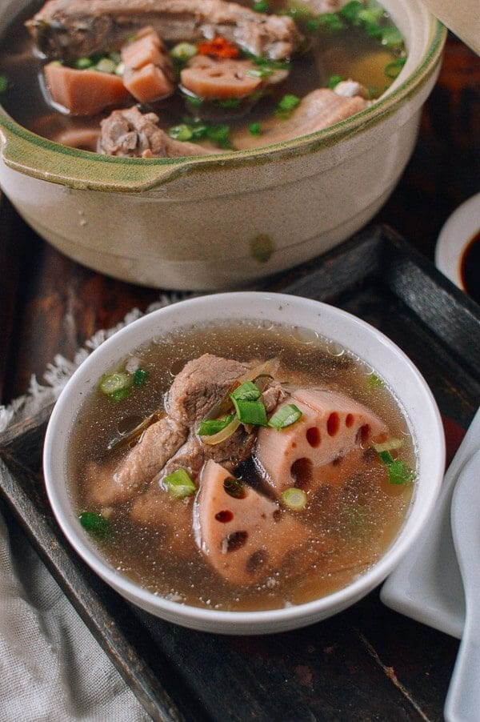

Lotus Root and Pork Soup

Description
A simple soup full of lotus root.
Ingredients
- 2 pounds pork ribs or pork neck bones
- 1 cup re-hydrated seaweed/kelp
- 1 pound lotus root
- 4 slices ginger
- 1 tablespoon dried goji berries
- 12 cups cold water
- salt (to taste)
- 1 scallion
Steps
- Soak pork ribs for an hour, then drain and set aside.
- Boil water and add pork bones and bring back to boil. Let cook for a minute. Turn off heat and drain.
- Rehydrate seaweed if using. Clean when rehydrated.
- Peel lotus root and cut into chunks right before cooking.
- Add prepared ingredients to stock pot and bring to a boil. Turn down heat and let it simmer for four hours. Add salt to taste. Chop scallions and add on top.